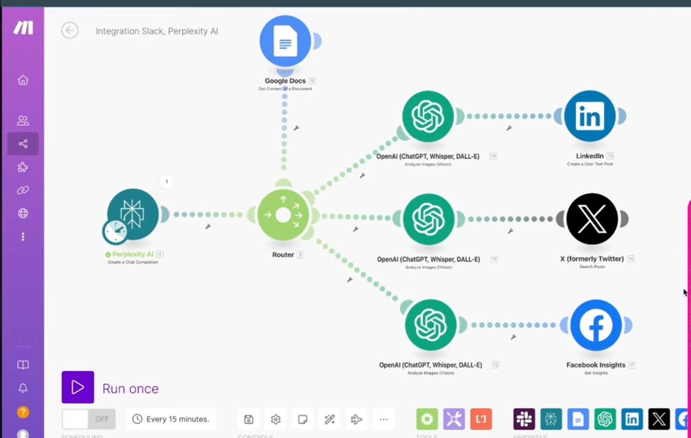

<meta charset="utf-8">
<html lang="ko">
<head>
    <link rel="stylesheet" type="text/css" href="./../style.css" />
    <title>AI Research Agents 자동화</title>
</head>
<body id="tt-body-page" class="">
<div id="wrap" class="wrap-right">
    <div id="container">
        <main class="main ">
            <div class="area-main">
                <div class="area-view">
                    <div class="article-header">
                        <div class="inner-article-header">
                            <div class="box-meta">
                                <h2 class="title-article">AI Research Agents 자동화</h2>
                                <div class="box-info">
                                    <p class="category">IT</p>
                                    <p class="date">2024-11-24 06:56:10</p>
                                </div>
                            </div>
                        </div>
                    </div>
                    <hr>
                    <div class="article-view">
                        <div class="contents_style">
                            <p data-ke-size="size16">AI Research Agents 자동화에 대한 검색자료를 요약정리 하였습니다.&nbsp;</p>
<p><figure class="imageblock alignCenter" >
    <span data-lightbox="lightbox">
        
    </span>
    <figcaption></figcaption>
</figure></p>
<p data-ke-size="size16"><b>1. 설치 및 설정:</b></p>
<ol style="list-style-type: decimal;" data-ke-list-type="decimal">
<li>Perplexity AI 웹사이트에 가서 계정을 만듭니다.</li>
<li>API 키를 생성합니다.</li>
<li>Python 라이브러리를 설치합니다.</li>
<li>코드를 작성합니다.</li>
</ol>
<p data-ke-size="size16"><b>2. 프롬프트 작성:</b></p>
<ol style="list-style-type: decimal;" data-ke-list-type="decimal">
<li>프롬프트는 AI 모델이 생성할 텍스트의 지침입니다.</li>
<li>프롬프트는 명확하고 간결해야 합니다.</li>
<li>프롬프트는 모델이 생성할 텍스트의 길이와 형식을 지정해야 합니다.</li>
<li>프롬프트는 모델이 생성할 텍스트의 내용을 지정해야 합니다.</li>
</ol>
<p data-ke-size="size16"><b>3. 모델 선택:</b></p>
<ol style="list-style-type: decimal;" data-ke-list-type="decimal">
<li>여러 가지 AI 모델 중에서 선택할 수 있습니다.</li>
<li>각 모델에는 고유한 강점과 약점이 있습니다.</li>
<li>모델을 선택할 때는 생성하려는 텍스트의 유형과 길이를 고려해야 합니다.</li>
</ol>
<p data-ke-size="size16"><b>4. 모델 학습:</b></p>
<ol style="list-style-type: decimal;" data-ke-list-type="decimal">
<li>모델을 학습시키려면 대량의 데이터가 필요합니다.</li>
<li>데이터는 모델이 학습할 수 있는 형식으로 전처리되어야 합니다.</li>
<li>모델을 학습시키는 데는 시간이 걸립니다.</li>
</ol>
<p data-ke-size="size16"><b>5. 모델 평가:</b></p>
<ol style="list-style-type: decimal;" data-ke-list-type="decimal">
<li>모델이 학습된 후에는 평가해야 합니다.</li>
<li>모델의 평가는 생성된 텍스트의 품질을 측정하는 데 사용됩니다.</li>
<li>모델의 평가는 모델이 학습된 데이터의 유형과 양에 따라 달라집니다.</li>
</ol>
<p data-ke-size="size16"><b>6. 모델 미세 조정:</b></p>
<ol style="list-style-type: decimal;" data-ke-list-type="decimal">
<li>모델의 성능을 향상시키기 위해 미세 조정할 수 있습니다.</li>
<li>미세 조정은 모델의 가중치를 조정하여 수행됩니다.</li>
<li>미세 조정은 모델의 성능을 향상시키는 데 도움이 될 수 있지만, 과도한 미세 조정은 모델의 성능을 악화시킬 수 있습니다.</li>
</ol>
<p data-ke-size="size16"><b>7. 모델 배포:</b></p>
<ol style="list-style-type: decimal;" data-ke-list-type="decimal">
<li>모델을 배포하면 다른 사람들이 사용할 수 있습니다.</li>
<li>모델을 배포하는 방법에는 여러 가지가 있습니다.</li>
<li>모델을 배포할 때는 모델의 라이센스를 고려해야 합니다.</li>
</ol>
<p data-ke-size="size16"><b>8. 모델 유지 보수:</b></p>
<ol style="list-style-type: decimal;" data-ke-list-type="decimal">
<li>모델을 배포한 후에도 유지 보수해야 합니다.</li>
<li>유지 보수에는 모델의 성능을 모니터링하고, 필요에 따라 업데이트하는 것이 포함됩니다.</li>
<li>유지 보수는 모델을 최신 상태로 유지하고, 사용자에게 최상의 경험을 제공하는 데 도움이 됩니다.</li>
</ol>
<p data-ke-size="size16"><b>9. 모델 활용:</b></p>
<ol style="list-style-type: decimal;" data-ke-list-type="decimal">
<li>AI 모델은 다양한 용도로 활용될 수 있습니다.</li>
<li>일부 일반적인 용도에는 다음이 포함됩니다.
<ul style="list-style-type: disc;" data-ke-list-type="disc">
<li>자연어 처리</li>
<li>기계 번역</li>
<li>이미지 인식</li>
<li>음성 인식</li>
<li>추천 시스템</li>
</ul>
</li>
</ol>
<p data-ke-size="size16"><b>10. AI 모델의 한계:</b></p>
<ol style="list-style-type: decimal;" data-ke-list-type="decimal">
<li>AI 모델에는 한계가 있습니다.</li>
<li>일부 한계에는 다음이 포함됩니다.
<ul style="list-style-type: disc;" data-ke-list-type="disc">
<li>편향</li>
<li>해석 가능성</li>
<li>데이터 요구 사항</li>
</ul>
</li>
</ol>
<p data-ke-size="size16"><b>11. AI 모델의 윤리적 고려 사항:</b></p>
<ol style="list-style-type: decimal;" data-ke-list-type="decimal">
<li>AI 모델을 사용할 때는 윤리적 고려 사항을 고려해야 합니다.</li>
<li>일부 윤리적 고려 사항에는 다음이 포함됩니다.
<ul style="list-style-type: disc;" data-ke-list-type="disc">
<li>공정성</li>
<li>책임</li>
<li>투명성</li>
</ul>
</li>
</ol>
<p data-ke-size="size16"><b>12. AI 모델의 미래:</b></p>
<ol style="list-style-type: decimal;" data-ke-list-type="decimal">
<li>AI 모델은 빠르게 발전하고 있습니다.</li>
<li>향후 몇 년 동안 AI 모델은 더욱 강력하고 다양한 용도로 사용될 것입니다.</li>
<li>AI 모델의 미래는 밝습니다.</li>
</ol>
<p data-ke-size="size16"><b>13. AI 모델에 대한 추가 리소스:</b></p>
<ul style="list-style-type: disc;" data-ke-list-type="disc">
<li>TensorFlow [유효하지 않은 URL 삭제됨]</li>
<li>PyTorch [유효하지 않은 URL 삭제됨]</li>
<li>Keras [유효하지 않은 URL 삭제됨]</li>
<li>Scikit-learn [유효하지 않은 URL 삭제됨]</li>
<li>Hugging Face [유효하지 않은 URL 삭제됨]</li>
</ul>
<p data-ke-size="size16"><b>14. 결론</b></p>
<p data-ke-size="size16">AI 모델은 강력하고 다양한 도구입니다. AI 모델을 효과적으로 사용하려면 체계적인 접근 방식이 필요합니다. 이 문서에서는 AI 모델을 사용하는 데 도움이 되는 14단계 프로세스를 제공합니다.</p>
<p data-ke-size="size16">&nbsp;</p>
<p data-ke-size="size16"><b>15. 추가 팁:</b></p>
<ul style="list-style-type: disc;" data-ke-list-type="disc">
<li>AI 모델을 사용할 때는 항상 최신 연구 결과를 따르십시오.</li>
<li>AI 모델을 사용할 때는 다양한 데이터 세트를 사용하여 모델을 테스트하십시오.</li>
<li>AI 모델을 사용할 때는 모델의 성능을 모니터링하고, 필요에 따라 업데이트하십시오.</li>
<li>AI 모델을 사용할 때는 윤리적 고려 사항을 고려하십시오.</li>
<li>AI 모델을 사용할 때는 재미있게 보내십시오!</li>
</ul>
<p data-ke-size="size16"><b>16. 참고 자료:</b></p>
<ul style="list-style-type: disc;" data-ke-list-type="disc">
<li>Google AI [유효하지 않은 URL 삭제됨]</li>
<li>Microsoft AI [유효하지 않은 URL 삭제됨]</li>
<li>IBM AI [유효하지 않은 URL 삭제됨]</li>
<li>Amazon AI [유효하지 않은 URL 삭제됨]</li>
<li>OpenAI [유효하지 않은 URL 삭제됨]</li>
</ul>
<p data-ke-size="size16">&nbsp;</p>
                        </div>
                        <br/>
                        <div class="tags">
                            
                        </div>
                    </div>
                </div>
            </div>
        </main>
    </div>
</div>
</body>
</html>
